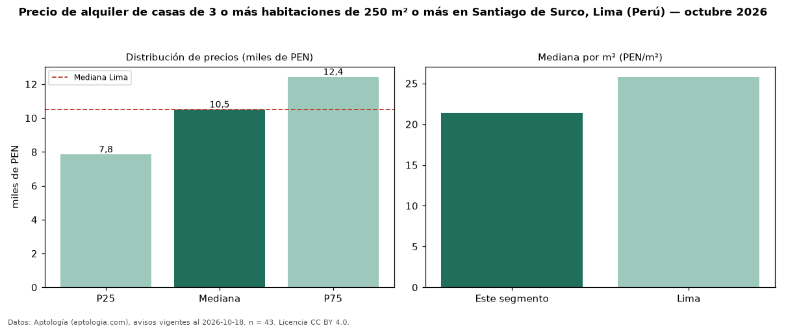

Precio de alquiler de casas de 3 o más habitaciones de 250 m² o más en Santiago de Surco, Lima (Perú) — octubre 2026
En Santiago de Surco, Lima (Perú), la mediana de canon mensual de casas de 3 o más habitaciones de 250 m² o más es PEN 10.500, según 43 avisos vigentes. Frente a la mediana de las casas de 3 o más habitaciones en alquiler de Santiago de Surco (PEN 9.720, n = 53), queda 8 % por encima; este segmento reúne el 81 % de esos avisos. Por metro cuadrado, la mediana es PEN 21,39/m² al mes (n = 43), 13 % por debajo de las casas de 3 o más habitaciones en alquiler de Santiago de Surco (PEN 24,58/m²). El área mediana anunciada es 400 m². La mediana de todas las casas en alquiler de Lima es PEN 10.500 (+0 % de diferencia). La mitad central de los avisos va de PEN 7.846 a PEN 12.424 (razón 1,6), una dispersión moderada. Datos: Aptología (aptologia.com), CC BY 4.0 — https://www.aptologia.com/pe/alquiler/lima/santiago-de-surco. Archivos: PDF, CSV con las cifras y gráfica PNG.

| Avisos únicos | 43 |
|---|---|
| Percentil 25 | COP 7.845 |
| Mediana | COP 10.500 |
| Percentil 75 | COP 12.423 |
| Mediana por m² | COP 21 |
Fuente: avisos vigentes de portales inmobiliarios recopilados por Aptología, deduplicados (mínimo 30 avisos únicos por celda). Precios pedidos, no cerrados. Fecha: 2026-10-18.